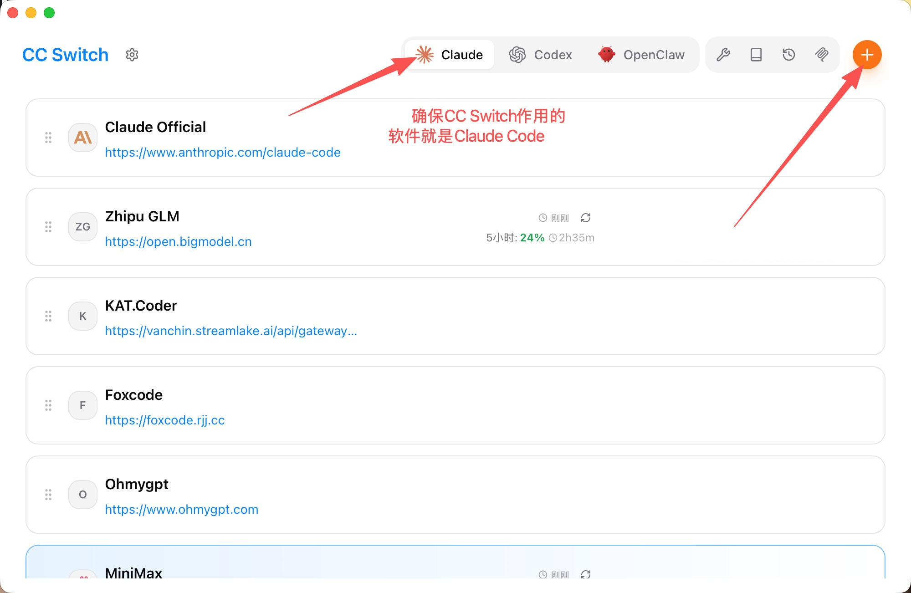

Claude Code 最新版安装教程
律师团队的 Claude Code 安装与模型接入指南。
目录
安装 Git Bash（仅 Windows 需要，Mac / Linux 跳过）
安装 Claude Code 本体
打开终端（Windows 用 PowerShell，Mac/Linux 用 Terminal），粘贴命令即可：
irm https://daheiai.com/cc.ps1 | iex
安装 2.1.153 老版本命令：
& ([scriptblock]::Create((irm https://daheiai.com/cc.ps1))) 2.1.153
备用：官方原版命令 irm https://claude.ai/install.ps1 | iex
curl -fsSL https://daheiai.com/cc.sh | sh
安装 2.1.153 老版本命令：
curl -fsSL https://daheiai.com/cc.sh | sh -s -- 2.1.153
备用：官方原版命令 curl -fsSL https://claude.ai/install.sh | sh
整个过程会下载一个 200+MB 的软件，取决于个人的网络状态，时间可能会很长。
⚠️ 重要声明
Claude Code Windows 安装脚本用于自动化安装流程，具体的脚本内容已开源，放在 GitHub 上可公开查看。
- 脚本会获取官方版本信息（
latest/manifest.json），并在本地执行安装。 - 所有二进制文件（claude.exe）均由用户电脑直接从 Anthropic 官方 Google Cloud Storage 存储桶下载。
- 使用前请确认当前网络环境能够正常访问
storage.googleapis.com及相关官方地址。
配置环境变量 PATH
把 C:\Users\你的用户名\.local\bin\ 加到用户级 PATH。
点开开始菜单，输入环境变量，点"编辑系统环境变量"。
在窗口下面点"环境变量"，在系统环境变量里找到 Path，双击它。
新建一条，把 C:\Users\你的用户名\.local\bin\ 复制进去。
Mac / Linux 的安装脚本一般会自动配置 PATH。
先试试关掉当前终端，重开一个新的输入 claude。
然后还是找不到命令，手动把以下内容加到你的 shell 配置文件中：
export PATH="$HOME/.local/bin:$PATH"
加到 ~/.bashrc 或 ~/.zshrc，然后执行 source ~/.zshrc 生效。
安装 cc-switch，接入更多模型
软件装好了，但还没有 AI 模型可用。这时候需要 cc-switch，它可以切换不同的 AI 模型提供商。
下载安装：

安装完成后，以智谱 GLM 为例，在 cc-switch 选择 Claude 图标（默认是第一个），然后添加渠道，填入密钥，指定模型名称，最后启用。回到终端输入 claude 就可以直接开始对话了。
报错时的处理
claude --debug
打开 PowerShell，复制粘贴这行命令，并查看报错。后文将列举具体报错情形与解决方案，若没有您遇到的错误类型，请询问实习生或将报错复制给大语言模型寻找解决方案。
报错一

Claude Code 基础使用
claude。右键文件夹用终端打开最快；如果右键没有，就先打开终端，再用 cd + 文件夹路径 进入工作目录。claude，然后在对话框内输入 /resume，就可以选择曾经在这个工作目录中的各种历史会话，回车即可恢复选中的会话了。/context 来查看当前会话的上下文占用情况。或者你担心自动压缩来得猝不及防，你也可以手动输入 /compact。压缩次数越多，越早期的内容越容易失真。Claude for Legal 安装与激活教程
（1）插件安装
若您还没有 GitHub 账号，使用邮箱（gmail 优先）注册 GitHub 账号。
GitHub 是全球最大开源社区，您可以在网站上获取丰富的程序资源，包括大量的 skill 插件。
打开以下链接，下载插件压缩包：
https://github.com/CSlawyer1985/claude-for-legal-ZH/tree/main
点击绿色的 Code 按钮，点击弹出选项中的「Download Zip」，下载插件压缩包至 Claude 同一文件夹下。（若难以寻找 Claude 路径，请使用 Everything 工具，下载方式见"8. 文件查找工具推荐：Everything"。）
解压 zip 文件后，打开作者撰写的安装教程：
https://github.com/CSlawyer1985/claude-for-legal-ZH/blob/main/QUICKSTART.md
您可直接阅读「在 Claude Code 中安装」这一部分。
教程"3. 安装你需要的插件"中，请在以下页面的「仓库布局」中选择您需要的插件名称，并替换命令中的 commercial-legal：
https://github.com/CSlawyer1985/claude-for-legal-ZH/blob/main/README.md
（2）插件激活和使用教程
① 冷启动面试
选择您需要的插件（例如 commercial legal），在对话框中输入以下命令并点击回车：
/commercial-legal:cold-start-interview
面试中，Claude 会通过选择题形式了解您的业务需求画像。您可一一回答，也可直接在对话框用自然语言告知 Claude 跳过面试。
② 选择您需要调用的 skill
输入以下格式的命令来调用指定 skill：
/commercial-legal:contract-review
/litigation-legal:case-analysis
③ 自然语言方式
当然，您也可以使用自然语言告诉 Claude 您需要使用的插件、或直接描述您的业务需求，甚至可以什么都不说。
但此类方式相较输入命令代码，更消耗 token。
常见问题
官方目前更推荐原生安装方式，本教程采用的也是这种方式。正常卸载方式：打开设置 > 应用 > 已安装的应用，搜索"Claude Code"，点击三个点，然后选择卸载。
文件查找工具推荐：Everything
Everything是一款高效文件查找工具。若您的电脑系统中搜索栏不够全面和精准，例如只能搜索C盘或常见文件，推荐您下载Everything这一免费开源、没有安全隐患的本地工具。Everything对于本次安装也有协助作用。
下载地址：https://www.voidtools.com/zh-cn/
下载教程：https://blog.csdn.net/lh155136/article/details/126208006
（下载步骤较为简单，若您遇到困难可查看教程。）